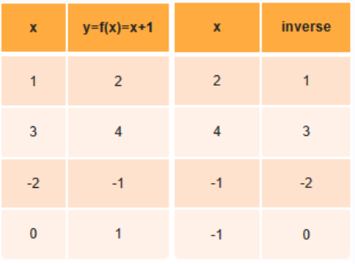

Inverse Functions
What Is Inverse Function?
Show Answer
The inverse of a function is the set of ordered pairs obtained by interchanging the first and second elements of each pair in the original function. In plain English, finding an inverse is simply the swapping of the x and y coordinates.
Example 1:
f (x) = {(2,3), (4,5), (-2,6), (1,-5)} (function)
The inverse of f (x) = {(3,2), (5,4), (6,-2), (-5,1)} (function)
Example 2:
g (x) = {(4,1), (8,3), (-5,3), (0,1)} (function)
The inverse of g (x) = {(1,4), (3,8), (3,-5), (1,0)} (NOT a function, x's repeat)
Finding an Inverse:
A function receives an input value, performs some operation on this value, and creates an output answer. The inverse of the function takes that output answer, performs some operation on it, and arrives back at the original function's starting input value.
A function and its inverse "undo" one another, leaving you right back where you started.
So how do we find these inverse relationships?
1. Ordered pairs
2. Algebraic
3.Graphing
Select each item to learn more.
Method 1: Ordered Pairs
If the function is stated as a set of ordered pairs, we can find the inverse of the function by simply swapping the ordered pairs.
If the definition of the function is fairly simple, we may be able to find the inverse of the function by examining selected ordered pairs and looking for a relationship for the inverse.

Method 2: Algebraic Method
There is a simple method to find the inverse of a function algebraically.
Process:
1. Set the function = y
2. Swap the x and y variables
3. Solve for y.
Example:
Find the inverse of function f (x) = x + 6.
1. y = x + 6
2. x = y + 6
3. x - 6 = y which is the inverse f -1 (x) = x - 6
Method 3: Graphing
The graph of an inverse relation is the reflection of the original graph over the line y = x (called the Identity Function). It may be necessary to restrict the domain of the starting function to ensure that the inverse is also a function.
Our starting function is y = 2x + 1.
If we reflect our starting function over the identity
line, y = x, we obtain the red dotted line. The new
red line is our inverse of y = 2x + 1.
To graph the inverse function, Use the algebraic method,